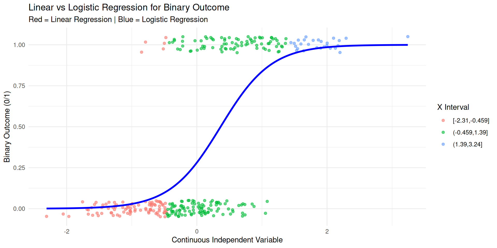

Session 2 : logistic regressions
An example
- Rovny’s

- interest in outsiderness and occupational structure as variables explaining voting (political sociology)
- Dependent Variable = voting at the individual level: binary
- IV = different definitions of ‘outsiderness’ in the labour market, depending on individual characteristics (continuous metric)
Your scatter plot

A logistic regression

Exercice 2
Rows: 2,640
Columns: 8
$ cntry <chr> "IT", "IT", "IT", "IT", "IT", "IT", "IT", "IT", "IT", "IT", "I…
$ polintr <int> 3, 3, 3, 3, 4, 3, 3, 3, 3, 3, 4, 2, 1, 2, 4, 3, 3, 2, 3, 3, 2,…
$ trstplt <int> 1, 0, 0, 1, 3, 2, 0, 4, 2, 1, 0, 7, 2, 2, 2, 0, 5, 3, 5, 2, 7,…
$ vote <int> 1, 1, 1, 1, 2, 2, 1, 1, 1, 2, 1, 3, 1, 2, 1, 1, 1, 1, 7, 1, 1,…
$ clsprty <int> 2, 2, 1, 2, 2, 2, 1, 2, 2, 2, 2, 1, 1, 2, 2, 2, 2, 1, 2, 1, 2,…
$ gndr <int> 2, 2, 1, 1, 1, 2, 1, 1, 1, 2, 2, 2, 1, 1, 1, 2, 1, 1, 2, 2, 1,…
$ yrbrn <int> 1943, 1963, 1963, 1984, 1984, 1964, 1960, 1983, 1961, 1993, 19…
$ eduyrs <int> 5, 18, 13, 8, 8, 16, 20, 18, 18, 10, 8, 13, 22, 18, 8, 17, 13,…
1 2 3 7 8
1799 567 209 40 25 ess <- ess |>
# mutating the dependent variable to get rid of any unnecessary rows
# as we have done above
mutate(
vote = case_when(
vote %in% c(3, 7, 8, 9) ~ NA_integer_,
vote == 2 ~ 0,
vote == 1 ~ 1,
TRUE ~ vote
),
# Recode 'polintr' to drop values 7 to 9
polintr = case_when(
polintr %in% c(7:9) ~ NA_integer_,
TRUE ~ polintr
),
# Recode 'clsprty' 1/2 into 0/1 and drop 7, 8
clsprty = case_when(
clsprty == 1 ~ 0,
clsprty == 2 ~ 1,
clsprty %in% c(7, 8) ~ NA_integer_,
TRUE ~ clsprty
),
# Recode 'gndr' into 0/1 and handle other cases as NAs
gndr = case_when(
gndr == 1 ~ 0,
gndr == 2 ~ 1,
TRUE ~ NA_integer_
),
# recode eduyrs
eduyrs = case_when(
eduyrs %in% c(1:55) ~ eduyrs,
TRUE ~ NA_integer_
)
)
#1.3
table(ess$vote)
0 1
567 1799 #1.3
logit1 <- glm(
vote ~ eduyrs,
data = ess %>% mutate(age = 2026-yrbrn),
family = "binomial")
logit2 <- glm(
vote ~ polintr + trstplt + clsprty + gndr +age + eduyrs,
data = ess %>% mutate(age = 2026-yrbrn),
family = "binomial")
#1.4
# simply use exp() on the coefficients of the logit
exp(coef(logit))(Intercept) polintr trstplt trstprt clsprty gndr
12.3154202 0.5762545 1.1432154 0.9489079 0.4366004 1.0558888
yrbrn eduyrs
0.9997778 1.0077364 (Intercept) polintr trstplt trstprt clsprty gndr
12.3154202 0.5762545 1.1432154 0.9489079 0.4366004 1.0558888
yrbrn eduyrs
0.9997778 1.0077364 OR 2.5 % 97.5 %
(Intercept) 12.3154202 4.0202638 51.4692536
polintr 0.5762545 0.5022735 0.6593841
trstplt 1.1432154 1.0454091 1.2517415
trstprt 0.9489079 0.8624815 1.0429944
clsprty 0.4366004 0.3428531 0.5547314
gndr 1.0558888 0.8419389 1.3248041
yrbrn 0.9997778 0.9991018 1.0002452
eduyrs 1.0077364 0.9765762 1.0399790
=============================================================
Voting turnout; 0 = abstention | 1 = voted
-------------------------------------------
Voting Behavior
(1) (2)
-------------------------------------------------------------
polintr -0.704***
(0.080)
trstplt -0.006
(0.007)
clsprty -1.507***
(0.177)
gndr 0.116
(0.112)
age 0.00001
(0.0001)
eduyrs 0.094*** 0.056***
(0.012) (0.014)
Constant 0.041 3.820***
(0.149) (0.348)
-------------------------------------------------------------
Observations 2,284 2,175
Log Likelihood -1,214.665 -1,032.654
Akaike Inf. Crit. 2,433.330 2,079.309
=============================================================
Note: *p<0.05; **p<0.01; ***p<0.001# Predicted probabilities of vote
eduyrs | Predicted | 95% CI
-------------------------------
0 | 0.59 | 0.49, 0.69
4 | 0.60 | 0.52, 0.67
8 | 0.61 | 0.56, 0.65
12 | 0.61 | 0.58, 0.64
14 | 0.62 | 0.59, 0.65
18 | 0.62 | 0.58, 0.67
22 | 0.63 | 0.56, 0.70
30 | 0.65 | 0.51, 0.76
Adjusted for:
* polintr = 3.00
* trstplt = 4.00
* trstprt = 3.00
* clsprty = 0.55
* gndr = 0.50
* yrbrn = 1968.00ggplot(predicted_probs, aes(x = x, y = predicted)) +
geom_line(color = "blue", size = 1) +
geom_point() +
geom_ribbon(aes(ymin = conf.low, ymax = conf.high), fill = "grey", alpha = 0.3) +
labs(
title = "Predicted Probability of Voting by education years",
x = "Education years",
y = "Predicted Probability of Voting"
) +
theme_minimal() +
theme(
plot.title = element_text(size = 14, face = "bold", hjust = 0.5),
axis.title = element_text(size = 12),
axis.text = element_text(size = 10)
)